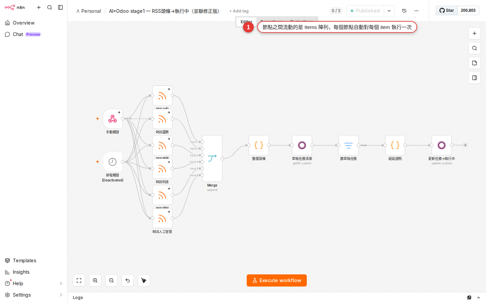

What an item is, and how data moves between nodes
The most important idea in n8n, and the one people skip most often, is a single word: item. Once items make sense, so do "why does my workflow run once instead of five times", "why did the Slack node send 100 messages" and "why does my expression show undefined". This chapter settles all of it, and every later chapter comes back to it.
Why you have to understand items
After you finish the "push the calendar to Slack every morning" workflow in Chapter 8, you probably ran into a few odd things:
- The Google Calendar node runs once and reads back five events, and the Slack node then sends five messages on its own — and nobody wrote a for-loop, did they?
- In the Expression panel
{{ $json.summary }}clearly has a value, but switch it to{{ $json.items[0].summary }}and you getundefined. - Google Sheet reads back an empty table and every downstream node is skipped outright — no error is raised, it simply does not run.
- You add one field with a Set node and the output panel shows five rows, not the single row you expected.
All of these come from the same thing: what travels between one n8n node and the next is not a blob of JSON, it is a list of items, one row at a time. Zapier hides this; n8n lays items out in front of you — which is exactly why it can do more than Zapier, and why it is harder for a beginner than Zapier.
An item is one record, like a row in Excel
The most useful analogy: every node's output is one Excel spreadsheet, and each row in that sheet is one item.
| Excel term | n8n term | What it looks like |
|---|---|---|
| The whole sheet | The node's output (one array) | [ {...}, {...}, {...} ] |
| One row | One item | { name: "Elmo", age: 30 } |
| One column | One field inside an item | name, age |
| One cell | One field's value on one item | "Elmo" |
Then the rule that matters most: the next node runs once for every single item. So Google Sheet reads back 100 rows → the Slack node sends 100 messages. That is not a bug, it is n8n's core behavior; the official docs call it item-based execution.
The compartments inside an item
An item is not plain JSON; it is an object with a few fixed compartments. You will only use the first one 99% of the time, but knowing the other two exist saves you trouble later.
| Compartment | What goes in it | When you need it |
|---|---|---|
json | The main data, a plain JSON object. This is where you read 99% of the time. | Almost every workflow. |
binary | Attached file content (PDFs, images, CSVs and other binary data). | Gmail attachments, Google Drive downloads, files an API returns. |
pairedItem | Records which upstream item this item came from, so the Merge node can line them up. | When you merge branches with the Merge node. n8n fills it in for you in most cases. |
In code, a complete item looks like this:
{
"json": {
"name": "Elmo",
"age": 30,
"email": "elmo@example.com"
},
"binary": {
"attachment": {
"mimeType": "application/pdf",
"fileName": "invoice.pdf",
"data": "..."
}
},
"pairedItem": { "item": 0 }
}So when the next node wants the name field, the path is $json.name — note that it is $json.name, not $json.json.name: n8n strips that outer json layer for you, to keep expressions short.
Four core ways to pull data in an expression
Once you switch a node field into Expression mode (the gear or the = marker at the top right of the field), you are in expression territory. Only these four forms are worth memorizing for reading item data; everything else is a variation on them:
| How to write it | What it means | When to use it |
|---|---|---|
{{ $json }} | The whole JSON of the current item. | When you want to see the whole thing, or pass the whole thing downstream. |
{{ $json.field }} | One field of the current item. | The most common one. For example {{ $json.summary }}, {{ $json.email }}. |
{{ $json['field with space'] }} | Field names with a space, or with Chinese characters, need bracket notation. | When the API returns fields named User Name, Order ID. |
{{ $('Google Sheets').item.json.field }} | Read data from a named upstream node (not just the previous one). | Reaching past the nodes in between for data from two or three stops back. |
$('Node Name') means "find that upstream node's output by its name". The node name is the one you see on the canvas (double-click a node to rename it). The advantage of writing it this way is that even with a pile of Set / IF nodes in between, you can still reach straight back for the original data.
How many times does one node run? Two modes
How many times a node runs is decided by two things: how many items the input has and the node's Execute Once setting. Most built-in nodes default to "as many runs as there are input items", but you can change that.
| Mode | Behavior | Which nodes behave this way |
|---|---|---|
| Once for each item (the default) | N items in the input → the node runs N times → the output is usually N items too. | Most integration nodes (Slack, Gmail, HTTP Request calling an API and so on). |
| All items in one pass | N items in the input → the node runs once and gets the whole array → you decide inside how many items come out. | Set, Aggregate, Item Lists, Code node (switchable), Sub-workflow (switchable). |
To see or change which one a node uses: click the node to open its settings → switch to the Settings tab at the top → find the Execute Once toggle. Turn it on and the node runs once using only the first item, however many items the input has; the rest are dropped.
Data flowing through three nodes, step by step
Dizzy from the abstractions? Walk through the simplest 3-node workflow once and it clicks: Manual Trigger → Google Sheets (Read) → Slack (Send). Assume the Google Sheet holds 5 rows of contacts.
| Stage | Node | Input items | What it does | Output items |
|---|---|---|---|---|
| Start | Manual Trigger | — (no input) | You press Execute by hand. | 1 empty item: [ {} ] |
| Middle | Google Sheets (Read Rows) | 1 item | Runs once for that 1 item, and reads 5 rows back from the sheet. | 5 items: [{row1}, {row2}, ...] |
| End | Slack (Send Message) | 5 items | One send per item → 5 messages go out. | 5 items (the result of each send) |
See the point? The item count is multiplied by the node in the middle. Manual Trigger pushes in 1 empty item, Google Sheets expands it into 5 items, and Slack is run 5 times in a row automatically. There is not one line of for-loop code in the whole thing; the item model does the expanding.

Three views for reading items in the output panel
After you press Execute step on a node (running that node on its own), or after the whole workflow finishes, the output panel on the right shows the items that node produced. Three view modes at the top let you switch between them, and each has its moment:
| View | What it looks like | When to use it |
|---|---|---|
| Table (a grid) | An Excel-style grid: fields are columns, items are rows. | A quick look at each item's values, and a check that the item count is right. This is the default view. |
| JSON | The raw JSON array, with objects you can expand / collapse. | When Table cannot fit it (too many fields / a nested structure), or when you want to copy the whole thing somewhere else. |
| Schema | A tree of the field structure: field names and types only, no values. | Look here before you write an expression — it tells you which fields exist and how to write the path. |
The top of the panel also shows the "N items" count — the number you will look at most while debugging. If it is not what you expected, something went wrong at that node, so trace upstream.
In the Table view the small number in front of each row (0, 1, 2...) is the item index. To read a field on the first item you write $json.field (the item of the current iteration), not $json[0].field — one of the most common beginner mistakes.
Why does my workflow run once instead of five times?
This is the question beginners ask most in their first week. The cause is always one of three, and you can pin it down by reading the item count node by node in Executions:
| Cause | Symptom | How to confirm |
|---|---|---|
| A: the Trigger emits only 1 item | Schedule Trigger and Manual Trigger send exactly 1 empty item on every fire, by default. Expecting them to "run 5 times by themselves" is a misreading. | Read the item count in the Trigger node's output panel. |
| B: some node has Execute Once turned on | There are 5 items upstream but this node runs once and stops — most likely you or someone else switched on Settings → Execute Once by accident. | Read the output item count node by node, and find the one where 5 becomes 1. |
| C: the expression reads the wrong level | You think $json.items expands the items, but it only reads the field named items inside the current item — and that field is an array, not n8n's idea of items. | Use the Schema view on that node's output to tell whether items means several real items or one item containing an array called items. |
C is a nasty one: "n8n items" and "a JSON field that happens to be called items" are two different things. APIs very often return something like this:
{
"total": 5,
"items": [
{ "id": 1, "name": "A" },
{ "id": 2, "name": "B" },
...
]
}n8n treats the whole thing as one item (because the API returned one blob). To expand the items array into 5 n8n items, use the Split Out node (Chapter 16) and point it at the items field. Only after that do you have 5 items, and only then does the downstream node run 5 times in a row.
When binary data comes up
Most business workflows never touch binary at all. Only nodes that deal with the file itself produce binary data:
- Gmail Trigger picks up a mail with attachments → they land in
binary.attachment_0,binary.attachment_1... - Google Drive Download → the file content is in
binary.data. - HTTP Request gets a PDF / image response and Response Format is set to File → binary.
- Read/Write Binary File (only meaningful when you self-host).
To look at binary, switch to the Binary tab in the output panel (a fourth tab alongside Table / JSON / Schema, which only appears when there is binary). It lists each binary's mime type, file name and size, and images even get a preview.
$json only and clear $binary; (2) avoid unnecessary Execute Workflow hand-offs (a sub-workflow copies it).Common pitfalls
-
An expression shows
undefinedTwo possibilities: (1) the field name is wrong — switch to the Schema view and read the real field name (case, spaces, whether there is a
data.prefix). (2) the upstream node never ran successfully — its output panel is empty or red. Fix the upstream node first, then worry about the expression. -
A node runs 100 times when you only wanted 1
That is because there are 100 items upstream. Pick one of three approaches: (a) drop an Aggregate node in between to fold the 100 into 1; (b) use a Code node (Chapter 20) with
return [ { json: { all: $input.all() } } ]; (c) if you only want the first record, turn on Execute Once in that node's Settings — but remember that means "take the first one", not "combine them all". -
The Merge node's item count does not add up
Merge has four modes, and the wrong one changes the result completely: Append (end to end, A's 3 + B's 2 = 5), Combine (which then splits into three sub-options: Matching Fields compares field values like a SQL join, Position pairs up the same index, All Possible Combinations is a Cartesian product, A's 3 × B's 2 = 6), SQL Query (1.49.0+, write the SQL yourself), Choose Branch (emit the data from one side only). Older docs call All Possible Combinations Multiplex; the newer name replaced it, so do not panic when someone else's workflow still uses the old one. Decide which one you want before you use it; Chapter 16 goes into more detail.
-
A node gets 0 items and is skipped
That is how n8n behaves: when the input is an empty array, the node does not run. It is deliberate (you never have to write an empty check), but beginners read it as a broken node. Trace upstream to find who emitted 0 — usually (a) neither IF branch passed, (b) Google Sheet Read found no data, (c) a filter node filtered everything out.
-
The item count is wrong after a Set node
The Set node runs once for each item by default (the item count stays the same), and that is correct. If you see 5 in and 5 out but the fields have gone missing, the Set node's mode is usually on Keep Only Set, which wipes out the original fields — try Include All Fields or Include Selected Fields instead. Chapter 18 takes the Set node apart in full.
-
The expression preview does not match what actually runs
The expression editor previews against the upstream node's output from its last run — if the upstream node has not run yet, or ran wrong, the preview shows a stale value. The fix: press Execute step on the upstream node to make it produce fresh output, then come back and look at the expression preview again.
FAQ
Does Zapier have this item idea too?
How many items can it take at once? Is there a ceiling?
Does binary data take up memory?
How do I see how long the workflow actually ran, and how long each node took?
Can I run the workflow on only some of the items instead of all of them?
What is the difference between $json and $input.all()?
$json is the json of the item in the current iteration — because the node runs N times in a row, each pass points $json at a different item. $input.all() gives you the array of all the items this one node received (it returns an Array whose members are complete items, with .json / .binary). Expressions can call it too, but in practice you use it most in the Code node (Chapter 20), because a Code node is usually set to handle everything in one pass. Its siblings: $input.first(), $input.last(), $input.item.